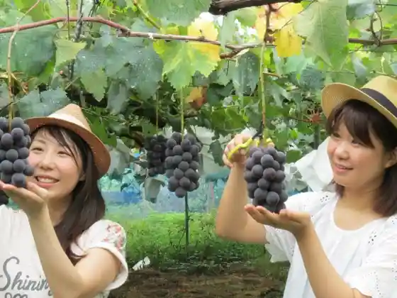
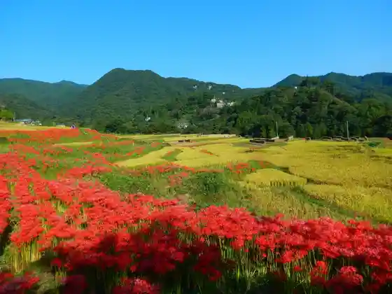
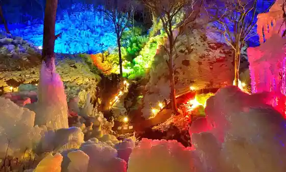
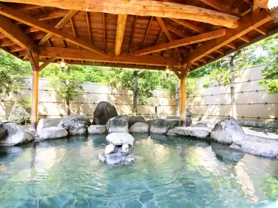

(Mai BBQ) Roadside Station Kaju Koen Ashigakubo Babekyu Ba
Yokoze, Saitama · 0494-25-0450 · Official / source link

Buko Campground
Yokoze, Saitama · 0494-25-0450 · Official / source link

(Mai BBQ) Roadside Station Kaju Koen Ashigakubo Babekyu Ba
Yokoze, Saitama · 0494-25-0450 · Official / source link

Buko Campground
Yokoze, Saitama · 0494-25-5151 · Official / source link

Ashigakubo Kaju Koen Village
Yokoze, Saitama · 0494-21-0299 · Official / source link
Kichijo Yama Daichu In
Yokoze, Saitama · 0494-24-0412 · Official / source link
Marutomi Farm
Yokoze, Saitama · 0494-23-8340 · Official / source link
Chichibu Yumoto Buko Onsen
Yokoze, Saitama · 0494-25-5151 · Official / source link
Chichibu Yokoze no Budo Kari
Yokoze, Saitama · 0494-25-0450 · Official / source link
Ashigakubo Kaju Koen Village
Yokoze, Saitama · 0494-21-0299 · Official / source link
Yagihara Farm
Yokoze, Saitama · 0494-23-2712 · Official / source link
Ashigakubo Kaju Koen Village
Yokoze, Saitama · 0494-24-3812 · Official / source link
Yokoze Buko San Tourist Information
Yokoze, Saitama · 090-9016-1577 · Official / source link
Chichibu Yokoze Saikurusuteshon
Yokoze, Saitama · 0494-24-3125 · Official / source link
Torin Tera Chichibu Shichifukujin Une Ebisu
Yokoze, Saitama · 0494-23-4124 · Official / source link
Marutomi Farm
Yokoze, Saitama · 0494-24-1497 · Official / source link
Chichibu Yokoze Saikurusuteshon
Yokoze, Saitama · 0494-24-9650 · Official / source link
Yokoze Famirii Noen Village
Yokoze, Saitama · 0494-25-0450 · Official / source link
Yokoze Buko San Tourist Information
Yokoze, Saitama · 0494-25-0450 · Official / source link
Chichibu Ashigakubo Saikurusuteshon
Yokoze, Saitama · 0494-25-0450 · Official / source link
Fudasho Kyu Ban Akechi Tera (Akechiji)
Yokoze, Saitama · 0494-22-1921 · Official / source link
Komatsuzawa Reja Farm
Yokoze, Saitama · 0494-24-6236 · Official / source link
Yokoze Folk History Museum
Yokoze, Saitama · 0494-24-0898 · Official / source link
Hanasaki Yama Park
Yokoze, Saitama · 0494-23-4701 · Official / source link
Chichibu Ashigakubo Saikurusuteshon
Yokoze, Saitama · 0494-24-2191 · Official / source link
Hitsujiyama Park
Yokoze, Saitama · 0494-23-8975 · Official / source link
Komatsuzawa Reja Farm
Yokoze, Saitama · 0494-23-2323 · Official / source link
Kichijo Yama Daichu In
Yokoze, Saitama · 0494-23-3413 · Official / source link
Ue no Hara Farm
Yokoze, Saitama · 0494-22-4193 · Official / source link
Fudasho Goban Go Uta Do (Gokado)
Yokoze, Saitama · 0494-25-0450 · Official / source link
Fudasho Juban Daiji Tera (Daijiji)
Yokoze, Saitama · 0494-22-4394 · Official / source link